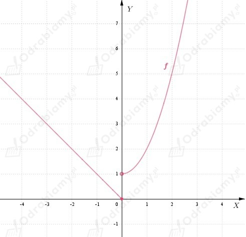
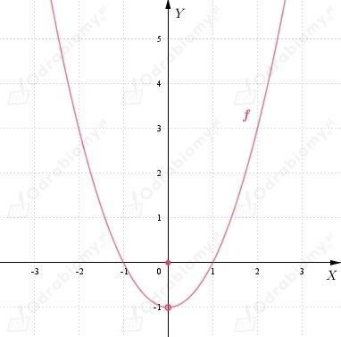

| Funkcja f: (a, b) → R jest ciągła w punkcie x0 ∈ (a, b) wtedy i tylko wtedy, gdy istnieje granica
oraz
|
a)
Należy wykazać, że funkcja:
nie jest ciągła w punkcie x0=0.
Obliczamy granice jednostronne w puncie x0=0.
Zauważamy, że:
zatem nie istnieje granica funkcji f w punkcie x0=0.
Wobec tego, funkcja f nie jest ciągła w punkcie x0=0,
co należało wykazać.
Wykres funkcji f:

b)
Należy wykazać, że funkcja:
nie jest ciągła w punkcie x0=0.
Obliczamy granice jednostronne w puncie x0=0.
Zauważamy, że:
zatem istnieje granica funkcji f w punkcie x0=0:
Natomiast
Zatem:
Wobec tego, funkcja f nie jest ciągła w punkcie x0=0,
co należało wykazać.
Wykres funkcji f:

| Funkcja f: (a, b) → R jest ciągła w punkcie x0 ∈ (a, b) wtedy i tylko wtedy, gdy istnieje granica
oraz
|
a)
Obliczamy granicę:
Funkcja f jest ciągła w punkcie x0=2 wtedy i tylko wtedy, gdy:
zatem:
b)
Obliczamy granicę:
Funkcja f jest ciągła w punkcie x0=2 wtedy i tylko wtedy, gdy:
zatem: